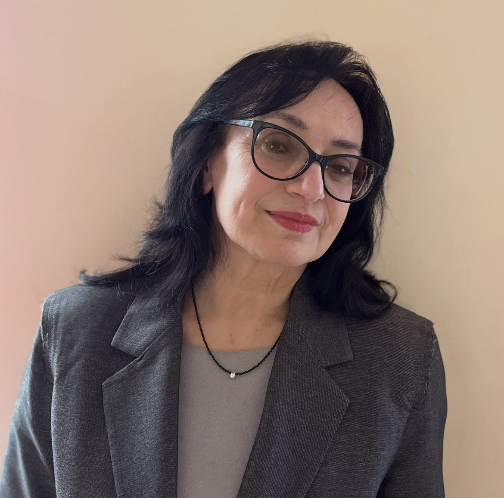

"Tā ir ļoti nogurdinoša un emocionāli smaga profesija."
Siguldas pilsētas vidusskolā strādā no 2011.gada
Intervēja Amēlija Joca
Labdien! Kādu mācību priekšmetu jūs mācāt?
Mācību priekšmets ir krievu valoda. Krievu valoda, senāk bija kā dzimtā valoda, bet tagad tā ir kā svešvaloda.
Cik gadus jūs strādājat skolā?
Es strādāju skolā kopš 1987. gada, ar nelielu pārtraukumu. Man piedzima meita, un nepilnu gadu es biju mājās, lai rūpētos par bērnu. Bet nu kopumā, tuvojās pie 40 gadiem, jā.
Jums patīk šī skola?
Man ļoti patīk šī skola. Ja nepatiktu, droši vien es tik ilgi nestrādātu. Bet kādu laiku pēc tam, tieši pēc universitātes, es vienu gadu es strādāju citā skolā, tad pārgāju uz šejieni. Un tagad, ņemot vērā manu ilgo darba stāžu šajā skolā, ja man nepatiktu, protams, es, iespējams, jau būtu mainījusi vai skolu, vai vispār darbu.
Vai Jums ir kādi draugi šajā skolā?
Protams, mana tuvākā kolēģe šeit, Tatjana Arhipova, nesen aizgāja pensijā. Nu, protams, es varētu uzskaitīt vēl citus.
Kā jūs nolēmāt kļūt par skolotāju?
Nu, droši vien atbildēšu tā. Mans mīļākais priekšmets skolā bija tas, ko es mācu. No sestās klases no Uzbekistānas mēs atbraucām šeit. Kāds tas bija gads? Neatceros. Es sāku mācīties sestajā klasē. Es mācījos no sestās līdz desmitajai klasei. Desmitā klase bija pēdējā vidusskolā, tagad ir divpadsmit, bet agrāk bija desmit. Mans mīļākais priekšmets bija krievu valoda un literatūra. Tas, pirmkārt. Otrkārt, šo priekšmetu pasniedza mana mīļākā skolotāja, ar kuru mēs draudzējāmies. Diemžēl pavisam nesen viņa nomira. Tieši viņas piemērs, iespējams, pamudināja mani kļūt par tieši krievu valodas un literatūras skolotāju.
Kas ir visgrūtākais skolotāja profesijā?
Ak, tā ir ļoti grūta profesija. Zini, es teiktu, ka tā ir ļoti nogurdinoša un emocionāli smaga profesija. Es teiktu, ka fiziski es nenogurstu, bet emocionāli es ļoti nogurstu, jo, vai vari iedomāties, skolotājam katru dienu jāpavada apmēram ar 200 cilvēkiem - klases, skolēni, skolotāji, administrācija. Vai vari iedomāties, ka caur tevi iet tik daudz, tik daudz dažādu cilvēku, visi ļoti atšķirīgi, ar atšķirīgu emocionālo līmeni? Nu, vispār mēs visi esam ļoti atšķirīgi. Un emocionāli tas dažreiz ir grūti. Es visu šo laiku neesmu iemācījusies būt tik mierīga un iecietīga. Ja redzu kādu netaisnību, piemēram, ja skolēns mani maldina un man ir jāpierāda viņam pašsaprotamas lietas. Šī netaisnība mani tik ļoti nogurdina, izsūc spēkus. Dažreiz, zini, man tik ļoti gribas, ak, Dievs, kā es gribu tādu darbu, kur es tikai pāršķirstītu papīrus, kaut ko uzrakstītu. Bet iznāk tā, ka tu vienmēr esi redzeslokā, un vienmēr ir jādomā, ko teikt un kā teikt.
Ja varētu atgriezties pagātnē, varbūt vēlētos nodarboties ar dokumentu kārtošanu vai izvēlētos kādu citu profesiju?
Ak, zini, tas ir ļoti, ļoti grūti. Vienkārši, kad nogursti, rodas doma, ka labāk būtu kaut kur kaut ko sakopt. Bet es domāju nē. Varbūt dažreiz. Kad es aizstāvēju diplomdarbu, man piedāvāja nokārtot akadēmisko minimumu. Es varēju iet tālāk. Ar perspektīvu rakstīt zinātnisku darbu vai pasniegt, piemēram, universitātē. Nu, dažreiz es to nožēloju. Varbūt man vajadzēja iet tālāk, jo, man šķiet, darbs skolā ir tāds sarežģīts. Lai gan, protams, mēs visi attīstāmies, apmeklējam daudz kursu, semināru, mēs visu laiku augam, bet tomēr visu savu potenciālu, kas man ir, es, diemžēl, neizmantoju.
Un kas jums visvairāk patīk šajā profesijā?
Pateicīgi skolēni. Man patīk dot. Zināšanas, ļoti bieži pieķeru sevi domājot, kad redzu kaut ko, piemēram, ļoti mīlu ceļot, domāju, ka par to, ka man jāpastāsta saviem bērniem. Esmu izlasījusi kaut ko interesantu? O, man noteikti jāpastāsta bērniem. Es arī ļoti mīlu pieiet lietām radoši.
SĀKUMS